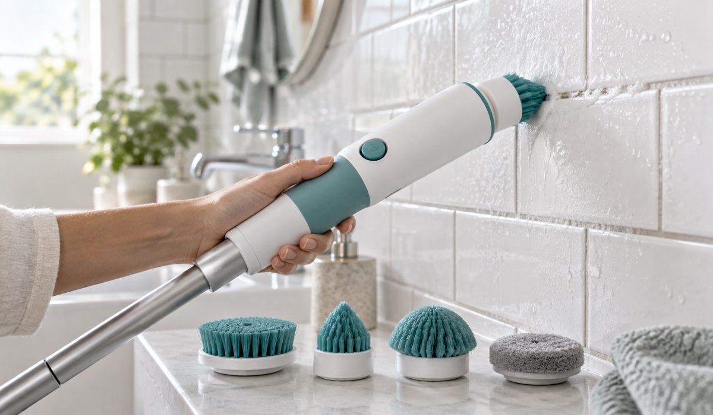
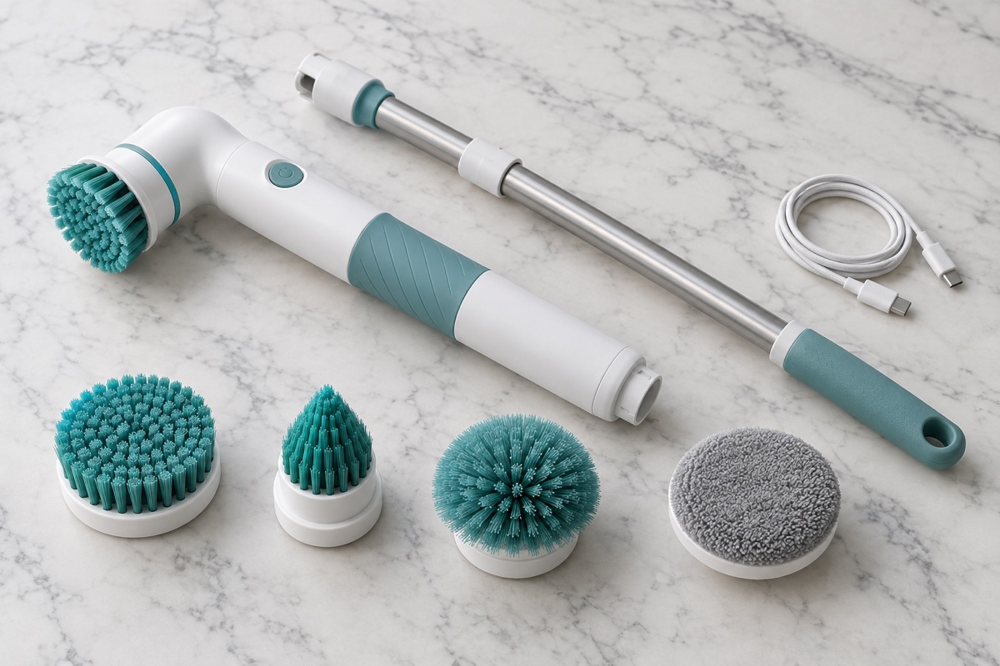
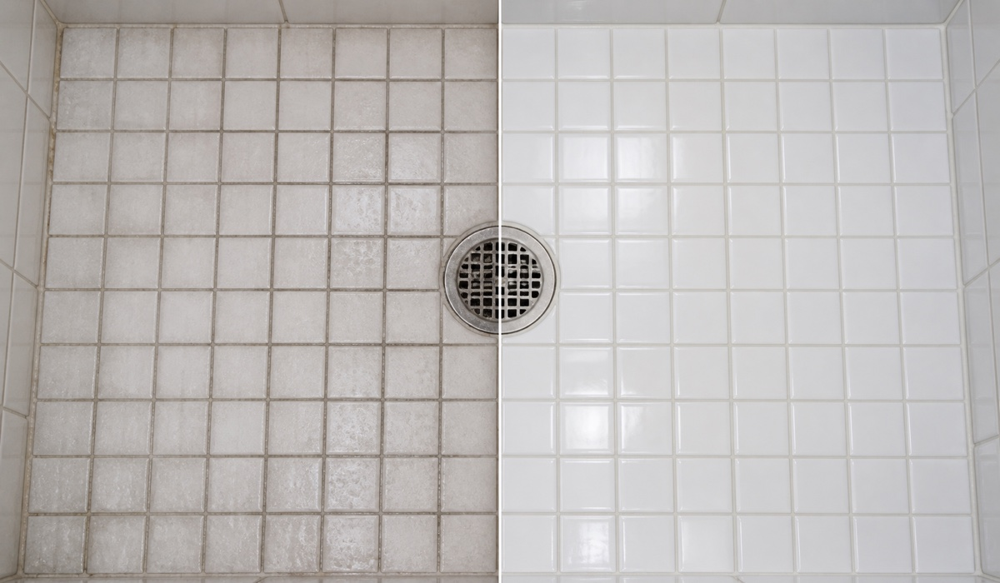

I Almost Hired a Cleaner. Then a $35 Cordless Scrubber Made My Bathroom Look New Again
After years of sore wrists and grout that never came clean, one small kitchen-drawer gadget is quietly replacing the weekend scrub session in thousands of homes. We tested it for 30 days.

Every Saturday for the past six years, I have spent about ninety minutes on my knees in the bathroom. Spray, wait, scrub, rinse, repeat. The shower door never quite lost its film. The grout between the floor tiles had gone from white to a permanent shade of grey.
In January I finally got a quote from a cleaning service. Two visits a month, two hours each: $260 per month, before tips. I did the math over a cup of coffee and felt slightly sick.
That same week, my sister-in-law mentioned a “spinning brush thing” she had bought for her rental property. She said it did the whole bathroom in fifteen minutes and that she had not touched a scouring pad since. I was skeptical. I had owned three “miracle” cleaning gadgets before, and all three lived in the back of a cupboard.
I ordered one anyway. It was called the GleamJet Cordless Spin Scrubber, made by a small company named Northwick Home. It arrived four days later.
What It Actually Is

The GleamJet is a cordless, rechargeable handle with a motor at one end. You click on one of four brush heads and it spins at roughly 300 rotations per minute. The handle extends from 40 cm to about 110 cm, so you can reach the ceiling corners of a shower without a step stool, or shrink it down to clean a sink by hand.
It is waterproof to the standard you would expect from an electric toothbrush. You can rinse the whole thing under the tap. A full charge takes about three hours and, in my testing, lasted through four complete bathroom cleans.
How It Works
The 30-Day Test

Week one. I started with the shower floor, the surface I had given up on. I used the corner brush and a spray of my regular bathroom cleaner. After eight minutes, the grout lines were visibly lighter. Not new, but lighter than they had been in years. My wrist did not hurt afterwards, which was the part that surprised me most.
Week two. The soft pad on the glass shower door removed the film that had survived every squeegee I had ever bought. I did it twice. The second pass was probably unnecessary.
Week three. I took it into the kitchen. The dome brush cleaned around the base of the tap where a ring of limescale had been forming since we moved in. I also used it on the oven door, the stove grates and, with the long handle, the tops of the kitchen cabinets.
Week four. The Saturday bathroom clean took nineteen minutes. I timed it. I have not called the cleaning service back.
What I liked
- Zero effort on grout. The spinning corner brush reaches the recessed lines that a flat pad slides over.
- Reaches high and low. The extendable handle means no more stepping into the tub to clean the tile above the shower head.
- No cord, no outlet hunting. One charge did four full bathroom cleans in my testing.
- Easy on the hands. The rubberised grip and light weight (about 600 g without the extension) mattered for my wrists.
- Fully rinseable. Brush heads pop off and go under the tap. The handle wipes clean.
What I did not like
The battery indicator is a single light that turns red at about 15% charge, which is not much warning. And while the flat pad is fine on a bathtub, on a very large floor area a mop is still faster. This is a scrubber, not a floor cleaner.
Ships within 24 hours from a regional warehouse
What Other Owners Are Saying
“I have arthritis in both hands and had basically stopped cleaning the shower myself. This gave that back to me. The long handle is the best part.”
“Bought it for the grout, kept it for the oven door. Genuinely did not expect it to work on baked-on grease but the dome brush went through it.”
“Four stars only because I wish the battery light gave more warning. Cleaning wise it is excellent. My landlord asked what I used on the tiles.”
Why It Is Selling Out
Northwick Home is a small company, and the GleamJet has been sold almost entirely by word of mouth. When I spoke to them for this article, they told me demand since January has run about three times ahead of what they planned, and that the current production run is the last one at the launch price.
For readers of The Home Living Journal, they have agreed to hold the 50% launch discount and include a second set of brush heads free while stock from this run lasts.
Includes the GleamJet handle, extension pole, 4 brush heads + a free spare set, USB-C charger and a 60-day money-back guarantee.
Only 37 units left at this price
Frequently Asked Questions
Will it scratch my tiles, glass or bathtub?
The bristles are nylon and the polishing pad is microfibre. On ceramic, porcelain, acrylic, glass and stainless steel it is safe. On natural stone, test on a corner first as you would with any brush.
How long does the battery last?
Around 60 to 75 minutes of continuous use, which was four full bathroom cleans in our testing. A full charge takes about three hours over USB-C.
Can I use it with bleach or strong cleaners?
Yes. The brush heads are chemical resistant. Rinse them after use so residue does not build up in the bristles.
Is it really waterproof?
The handle is rated IPX7. It can be rinsed under a running tap and used in a wet shower. It should not be fully submerged for long periods.
What if it does not work for me?
There is a 60-day money-back guarantee. Return it in any condition within 60 days for a full refund. Northwick Home covers return shipping.
How fast is shipping?
Orders ship within 24 hours from a regional warehouse. Most customers receive their GleamJet within 3 to 6 business days.
Final Verdict
I did not expect to write a positive review of a cleaning gadget. I have been let down too many times. But after thirty days, the GleamJet has done something none of the others managed: it has changed my Saturday. The bathroom is cleaner than when I paid attention to it, and I spend a fraction of the time.
If you have grout you have given up on, a shower door you cannot get clear, or wrists that do not want another year of scrubbing, this is the first one of these I can honestly recommend. At the launch price, it costs less than one visit from the cleaning service I never hired.
Check Availability & Claim 50% OffFree shipping · 60-day money-back guaranteeOffer valid while the current production run is in stock
Reader Comments (48)
Ordered after reading this last week. Arrived in 4 days. Did the shower this morning and I actually laughed at how easy the grout was. Thank you for the honest review.
Does anyone know if the extension works for cleaning the outside of a ground floor window? Thinking of getting one for that.
Marcus, yes, with the soft pad it worked well on our patio door glass. Use plenty of water so the pad does not run dry.
Bought two, one for my mum. She is 78 and could not manage the bath any more. She rang me to say she did the whole thing herself. Worth it for that alone.
Battery light complaint is fair. Otherwise no notes, it does exactly what the article says. Kitchen tap base is finally clean.
Is the discount still on? The timer keeps resetting for me.